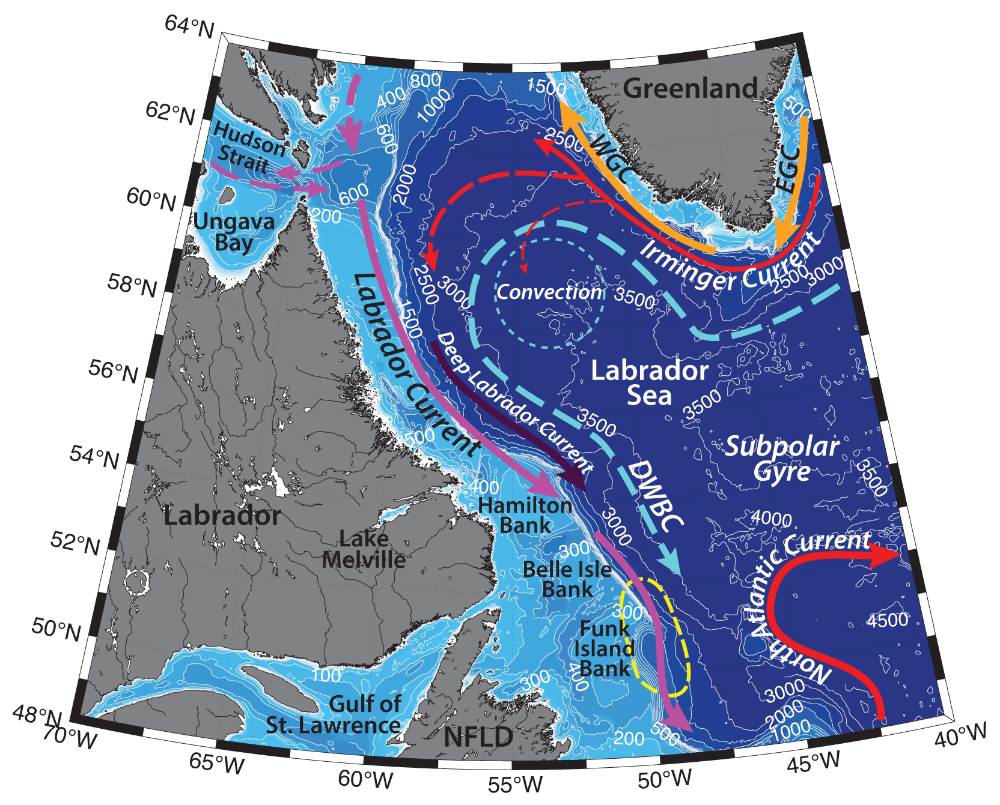

Schematic water circulation patterns and geographical place names in the Labrador region. Adopted from Cunny et al. (2002), Pickart et al. (2002), Yashayaev (2007), Zantopp et al. (2017). Dashed yellow line marks the studied region.
Hydrography of the Labrador region is determined by large variety of factors, but mainly by the Labrador Current, deep convection and formation of the Labrador Sea Water, Deep Western Boundary Current and atmospheric forcing.
General circulation in the Labrador Sea is cyclonic, formed on the surface by two fresh baroclinic boundary currents – the West Greenland Current and the Labrador Current. A strong salinity gradient separates these currents and the deep Labrador Basin.
The Labrador Current flows southeastwards along the Labrador Shelf, carrying fresh and cold water from Baffin Bay, the Hudson Bay System and the Canadian archipelago (T ∼ −1.5°C, S ≤ 34). The current incorporates the West Greenland Current, Baffin Current (outflow along the west side of Baffin Bay) and Hudson Strait outflow. Straneo and Saucier (2008) have calculated, that the latter accounts approximately for 15% of the volume and 50% of the fresh water carried by the Labrador Current. The Labrador Current is a shallow ~ 50 km wide current, advected mainly above the shelf and upper slope and extending down to 500 m. It is one of the main pathways for the equatorward export of cold and fresh waters from the Labrador Sea; it carries icebergs from the Canadian archipelago southwards (e.g. Yashayaev, 2007). The Labrador Current largely determines hydrography, productivity and ecosystem properties along the Labrador Shelf (and the downstream North Atlantic; Straneo and Saucier, 2008). Its transport is estimated to be ~11 Sv ±4 Sv (Lazier and Wright 1993). Due to variations in freshwater flux from the Baffin and Hudson bays (seasonal freshwater input by rivers and sea-ice melt), the maximum velocities in the current are observed during October, and minimum in April – March (Lazier and Wright 1993). Large nutrient input from the Hudson Strait is responsible for the higher productivity of the Labrador shelf, relative to the Baffin Bay shelf (e.g. Drinkwater and Harding, 2001; Straneo and Saucier, 2008). Large tides in Hudson Strait with amplitudes of 5 to 7 m and tidal currents of up to 3 m/s enhance mixing in the region, tidal fronts separate the areas (Sutcliffe et al., 1983).
The West Greenland Current (WGC; T ∼ −1.8°C, S ≤ 34.5; Cunny et al., 2002) carries fresh and cold water from the Nordic Seas northwestwards along the western Greenland coast. The warmer and saltier Irminger Sea Water (ISW; T ∼ 4.5°C, S ∼ 34.95 psu) is advected underneath the colder WGC. It is the remnant water from Gulf Stream, advected in the Irminger Current along the Subpolar Gyre. Its transport has been estimated to be ~ 11 Sv (Clarke, 1984). ISW travels around the Labrador Sea, with the core situated at about 500 m depth, and is modified and deepened on its way. It is then found below the fresh water of the Labrador Current. The Irminger Current sheds eddies, that bring heat to the center of the Labrador Sea, and play important role in the restratification after winter convection (e.g. Yashayaev, 2007) and it keeps the Labrador Sea ice free (Cuny et al., 2002).
The Labrador Sea is an important site of deep winter convection, which plays a major role in the Atlantic Meridional Overturning Circulation (AMOC; e.g. Cunny et al., 2002; Pickart et al., 2002; Yashayaev, 2007; Zantopp et al., 2017). Deep convection also redistributes the nutrients across the basin and southwards (Yashayaev, 2007). A large variety of factors are believed to influence the convection, including the atmospheric forcing (e.g. fluctuations of the North Atlantic Oscillation), regional circulation, remote input of heat and salt from the Arctic and subtropics, and the Labrador Sea’s memory of previous convective seasons (e.g. Pickart et al., 2002; Yashayaev, 2007). Intense surface cooling (e.g. due to strong cold winds from Canada) causes the convection reach up to 2000 m depth and form Labrador Sea Water (LSW; 27.74 kg/m3 – 27.8 kg/m3; Zantopp et al., 2017), which later spreads into the outer Atlantic Ocean.
LSW formation is prone to large interannual and decadal, as well as spatial variability. It doesn’t happen every year, as well as across the whole basin. Clarke and Gascard (1983) suggested that the deepest convection takes place north of Hamilton Bank and close to the Labrador slope. Characteristics of the water masses also depend on the preliminary conditions in the basin and the strength of convection: e.g. Pickart with coauthors (2002) have witnessed the formation of two modes of LSW: a cold/fresh/dense classical LSW in the western side of the interior basin (seaward of the western continental slope) and a warmer, saltier and lighter LSW on the western continental slope directly into the Deep Western Boundary Current. In their (2003) study Pickart with coauthors argue that overturning to a depth of 1500-2000 m can form LSW as well in the southwest Irminger Sea.
Downstream of convection area, new Labrador Sea Water may get involved into the Deep Western Boundary Current (DWBC), which travels cyclonically along the 3000 m isobath in the Labrador Basin (e.g. Cunny et al., 2002). It also carries North-East Atlantic Deep Water (NEADW; T∼ 3°C, S ∼ 34.92; 2500 – 3200 m) and the denser Denmark Strait Overflow Water (DSOW; T ≤ 1.5°C, S ∼ 34.9 psu; e.g. Cunny et al., 2002; Zantopp et al., 2017). DWBC, transporting around 30 Sv of NADW (Zantopp et al., 2017) feeds the lower limb of the AMOC and is responsible for a significant part of the poleward ocean heat transport (Zantopp et al., 2017).
Nearly one-third of DSOW is the dense water (Jonsson and Valdimarsson, 2004), originated from the northwestern part of the Iceland Sea, where the deepest and densest convection occurs, as well as from farther north in the Greenland Sea (Messias et al. 2008; Vage et al., 2015; Pickart et al., 2017). This water has a potential density anomaly larger than 28.03 kg m−3 (Vage et al. 2011). DSOW exhibits strong interannual variability, featuring distinct short-term basin-scale events or pulses of anomalously cold and fresh water, separated by warm and salty overflow modifications. It may take around a year for these waters to reach the Labrador peninsula side and the central Labrador Basin from the Greenland (Yashayaev, 2007).
Zantopp with coauthors (2017) have argued, that while the general circulation at depth in the Labrador Sea is cyclonic, different elements of the DWBC can behave separately, depending on the forcing. As such, for example, Lazier and Wright (1993) observed a separate barotropic flow of LSW near the 2500-m isobath, which they addressed as the “deep” Labrador Current. The deep Labrador Current is generally stronger in winter and weaker in summer (e.g. Cunny et al., 2002). Offshore of the main boundary currents, Lavender with coauthors (2000) have measured a series of cyclonic recirculation cells of the cyclonic boundary currents (at ~ 700 m depth). They form a weak anticyclonic flow in the interior Labrador basin.